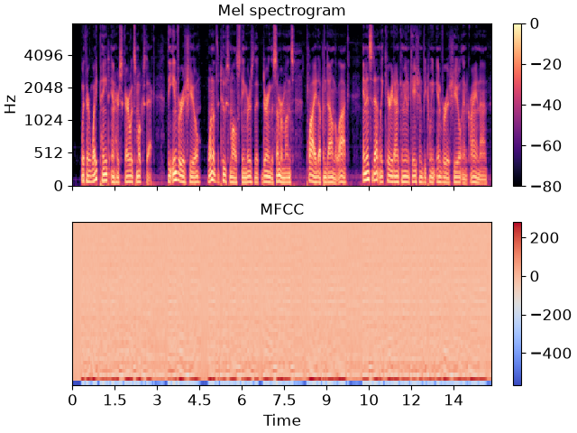
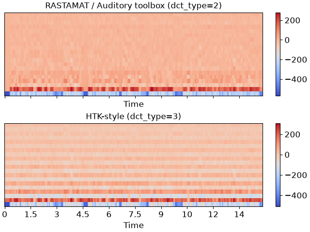

librosa.feature.mfcc
- librosa.feature.mfcc(*, y=None, sr=22050, S=None, n_mfcc=20, dct_type=2, norm='ortho', lifter=0, **kwargs)[source]
Mel-frequency cepstral coefficients (MFCCs)
Warning
If multi-channel audio input
yis provided, the MFCC calculation will depend on the peak loudness (in decibels) across all channels. The result may differ from independent MFCC calculation of each channel.- Parameters:
- ynp.ndarray [shape=(…, n,)] or None
audio time series. Multi-channel is supported..
- srnumber > 0 [scalar]
sampling rate of
y- Snp.ndarray [shape=(…, d, t)] or None
log-power Mel spectrogram
- n_mfccint > 0 [scalar]
number of MFCCs to return
- dct_type{1, 2, 3}
Discrete cosine transform (DCT) type. By default, DCT type-2 is used.
- normNone or ‘ortho’
If
dct_typeis 2 or 3, settingnorm='ortho'uses an ortho-normal DCT basis. Normalization is not supported fordct_type=1.- lifternumber >= 0
- If
lifter>0, apply liftering (cepstral filtering) to the MFCCs:: M[n, :] <- M[n, :] * (1 + sin(pi * (n + 1) / lifter) * lifter / 2)
Setting
lifter >= 2 * n_mfccemphasizes the higher-order coefficients. Aslifterincreases, the coefficient weighting becomes approximately linear.- If
- **kwargsadditional keyword arguments to
melspectrogram if operating on time series input
- n_fftint > 0 [scalar]
length of the FFT window
- hop_lengthint > 0 [scalar]
number of samples between successive frames. See
librosa.stft- win_lengthint <= n_fft [scalar]
Each frame of audio is windowed by window(). The window will be of length win_length and then padded with zeros to match
n_fft. If unspecified, defaults towin_length = n_fft.- windowstring, tuple, number, function, or np.ndarray [shape=(n_fft,)]
a window specification (string, tuple, or number);
see
scipy.signal.get_window- a window function, such asscipy.signal.windows.hann- a vector or array of lengthn_fft.. see also::librosa.filters.get_window- centerboolean
If True, the signal
yis padded so that frame
tis centered aty[t * hop_length]. - If False, then frametbegins aty[t * hop_length]- pad_modestring
If
center=True, the padding mode to use at the edges of the signal. By default, STFT uses zero padding.- powerfloat > 0 [scalar]
Exponent applied to the spectrum before calculating the melspectrogram when the input is a time signal, e.g. 1 for magnitude, 2 for power (default), etc.
- **kwargsadditional keyword arguments for Mel filter bank parameters
- n_melsint > 0 [scalar]
number of Mel bands to generate
- fminfloat >= 0 [scalar]
lowest frequency (in Hz)
- fmaxfloat >= 0 [scalar]
highest frequency (in Hz). If None, use
fmax = sr / 2.0- htkbool [scalar]
use HTK formula instead of Slaney
- dtypenp.dtype
The data type of the output basis. By default, uses 32-bit (single-precision) floating point.
- Returns:
- Mnp.ndarray [shape=(…, n_mfcc, t)]
MFCC sequence
See also
Examples
Generate mfccs from a time series
>>> y, sr = librosa.load(librosa.ex('libri1')) >>> librosa.feature.mfcc(y=y, sr=sr) array([[-565.919, -564.288, ..., -426.484, -434.668], [ 10.305, 12.509, ..., 88.43 , 90.12 ], ..., [ 2.807, 2.068, ..., -6.725, -5.159], [ 2.822, 2.244, ..., -6.198, -6.177]], dtype=float32)
Using a different hop length and HTK-style Mel frequencies
>>> librosa.feature.mfcc(y=y, sr=sr, hop_length=1024, htk=True) array([[-5.471e+02, -5.464e+02, ..., -4.446e+02, -4.200e+02], [ 1.361e+01, 1.402e+01, ..., 9.764e+01, 9.869e+01], ..., [ 4.097e-01, -2.029e+00, ..., -1.051e+01, -1.130e+01], [-1.119e-01, -1.688e+00, ..., -3.442e+00, -4.687e+00]], dtype=float32)
Use a pre-computed log-power Mel spectrogram
>>> S = librosa.feature.melspectrogram(y=y, sr=sr, n_mels=128, ... fmax=8000) >>> librosa.feature.mfcc(S=librosa.power_to_db(S)) array([[-559.974, -558.449, ..., -411.96 , -420.458], [ 11.018, 13.046, ..., 76.972, 80.888], ..., [ 2.713, 2.379, ..., 1.464, -2.835], [ 2.712, 2.619, ..., 2.209, 0.648]], dtype=float32)
Get more components
>>> mfccs = librosa.feature.mfcc(y=y, sr=sr, n_mfcc=40)
Visualize the MFCC series
>>> import matplotlib.pyplot as plt >>> fig, ax = plt.subplots(nrows=2, sharex=True) >>> img = librosa.display.specshow(librosa.power_to_db(S, ref=np.max), ... x_axis='time', y_axis='mel', fmax=8000, ... ax=ax[0]) >>> fig.colorbar(img, ax=[ax[0]]) >>> ax[0].set(title='Mel spectrogram') >>> ax[0].label_outer() >>> img = librosa.display.specshow(mfccs, x_axis='time', ax=ax[1]) >>> fig.colorbar(img, ax=[ax[1]]) >>> ax[1].set(title='MFCC')
Compare different DCT bases
>>> m_slaney = librosa.feature.mfcc(y=y, sr=sr, dct_type=2) >>> m_htk = librosa.feature.mfcc(y=y, sr=sr, dct_type=3) >>> fig, ax = plt.subplots(nrows=2, sharex=True, sharey=True) >>> img1 = librosa.display.specshow(m_slaney, x_axis='time', ax=ax[0]) >>> ax[0].set(title='RASTAMAT / Auditory toolbox (dct_type=2)') >>> fig.colorbar(img, ax=[ax[0]]) >>> img2 = librosa.display.specshow(m_htk, x_axis='time', ax=ax[1]) >>> ax[1].set(title='HTK-style (dct_type=3)') >>> fig.colorbar(img2, ax=[ax[1]])

